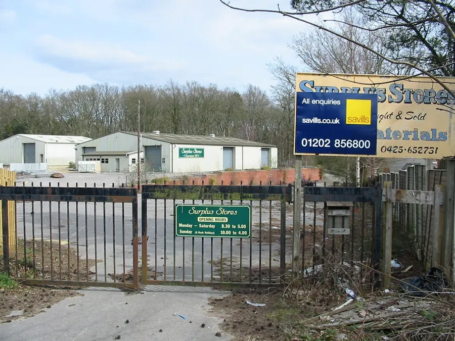
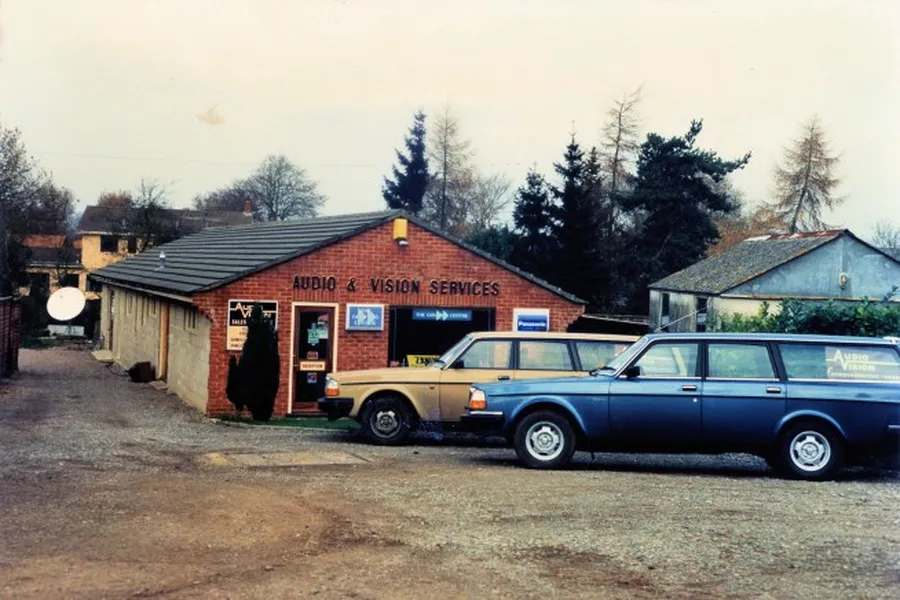
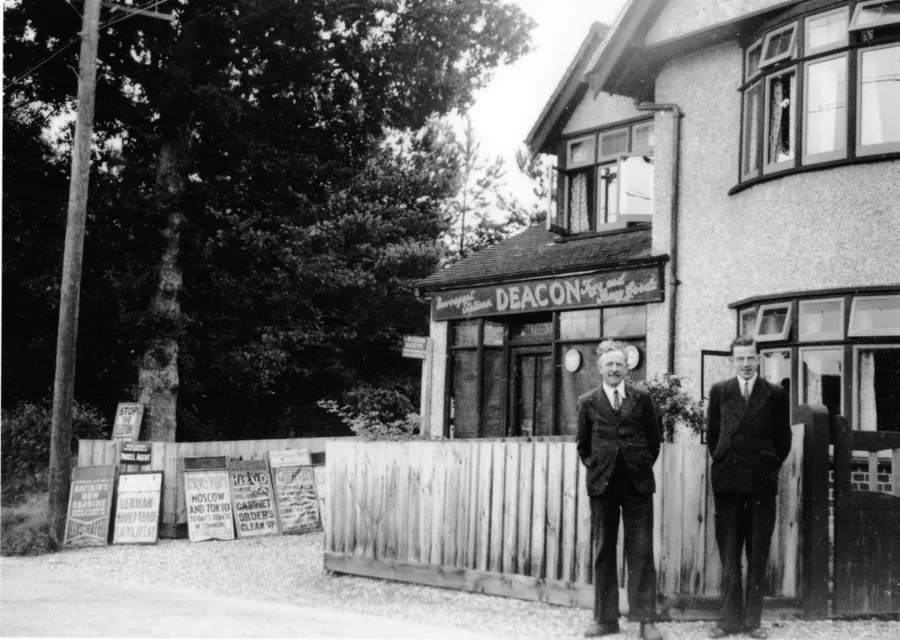
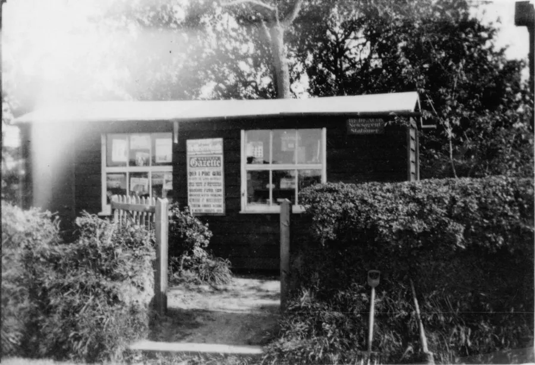
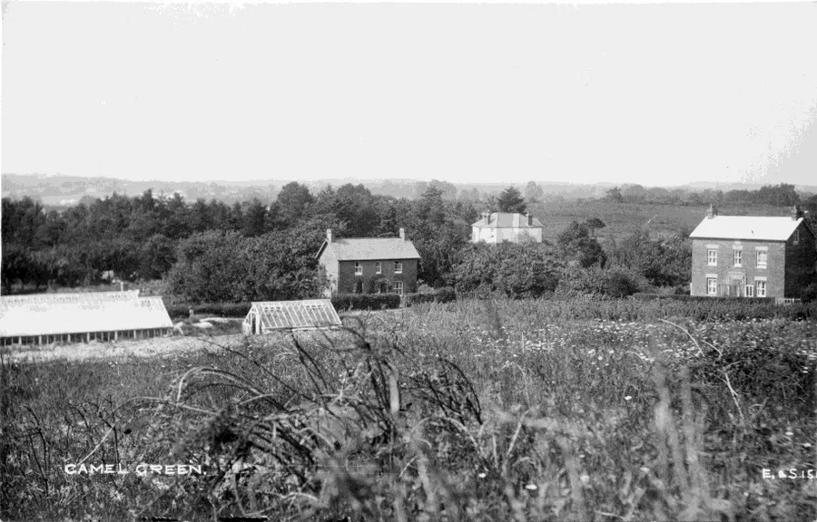
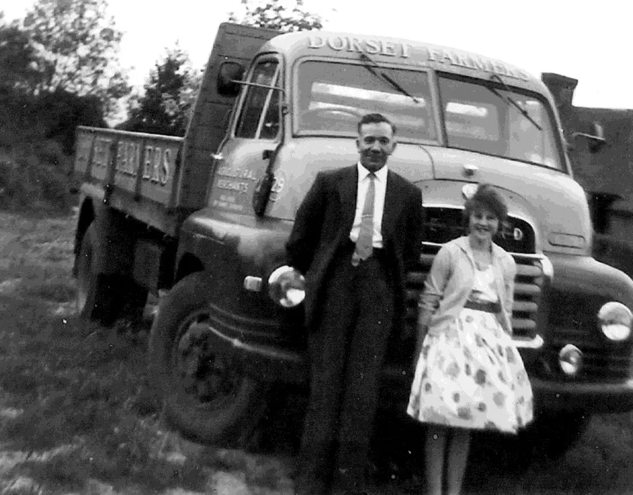
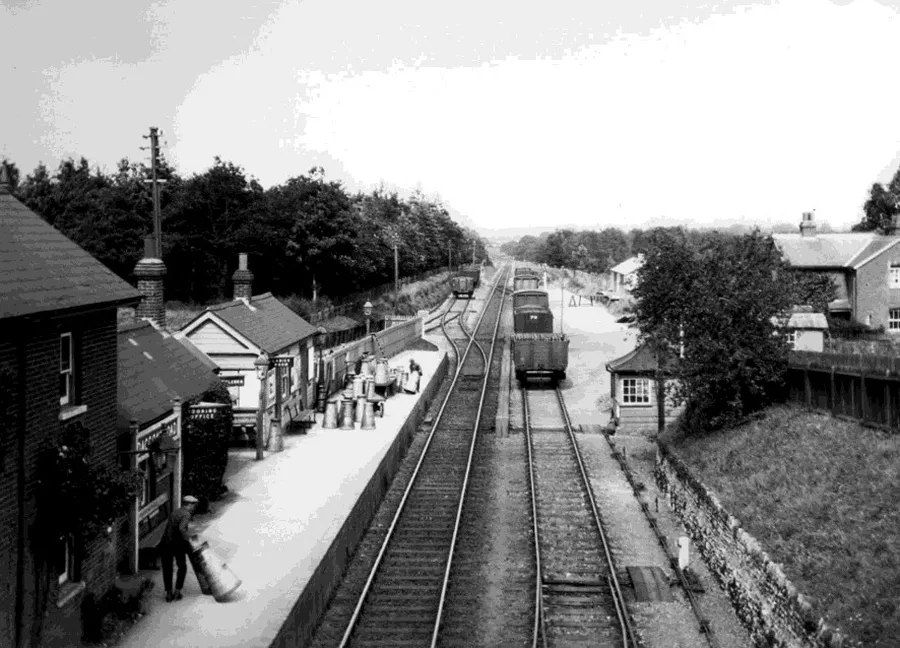

Old Commerce — Part I
by Adrian King

At the beginning of the twentieth century Alderholt had a population of about 600. This remained largely unchanged until the mid-1970s when the village expanded and the population rose sharply to nearly 3,000. The following list covers commercial enterprises that operated in Alderholt during the period from the early 1900s to the 1980s and later.
Adams Shoe Shop
This was situated between Ringwood Road and Blackwater Drove and run by Albert Adams. They were stockists for Holdfast Boots and also did repairs.
Alderholt Surplus Stores
Alderholt Surplus Stores operated from the former Daggons Road Brickyard and became one of the village's best-known businesses. Unlike most local shops it attracted customers from a wide area and was described in the East Dorset Local Plan as providing a "specialised service". The site was later redeveloped for housing.

Anton & Manston
Anton & Manston (Developments) Ltd was incorporated on 17 February 1976 and operated as a construction and development company. The directors included Norman James Anton and Dudley Gregory Manston. The firm developed housing in Camel Green Road during the 1980s. They also built Windsor Way and Birchwood Park before the company later became dissolved.
Audio & Vision Services
They were radio and television engineers operating from a showroom and workshop on land beside the Tabernacle in Camel Green during the 1980s. The business was run by Stan Broomfield and Dave Hitchmough.
Stan later purchased a shop in Fordingbridge and traded there under the same name. The Camel Green workshop was eventually demolished to make way for housing and the Fordingbridge shop was later sold to Bailey’s of Verwood.

Baileys Grocery Shop
Bailey’s Grocery Shop stood on the corner of Station Road and Park Lane. The grocery and provisions store was run by Fred and Mrs Bailey and served the local community.
Stan Broomfield recalls
Their son Geoffrey Bailey was a men’s hairdresser so they built an add-on to the side of the house which became the men’s barbers shop and newspaper supplier. I can remember having my hair cut there. After some years he began a side-line of selling and repairing electrical appliances to support his income, I recall repairing some TVs which he brought to us in Fordingbridge at Southern Radio.
"Following a short period this all changed, his mum and dad retired into a bungalow in Park Lane which was built in their garden, and where Ron Issacs now lives. It was then that Geoff moved the whole grocery and newsagents into the side building with no more barbers or electrical operation.”
When Mr and Mrs C. Laishley bought the premises they demolished the shop annexe and built a house called Elmada on the corner.
Butchers
The shop owned by John Harding was at Presseys corner. He delivered to customers with pony and trap. The business operated from a wood and brick constructed building with windows fronting onto the road. The entrance was via a side-door where a garage currently stands. There was another building at the rear which housed his stable and cart house. It had a paddock running towards the back-land and he lived in what is now Greenfield.
Coal Merchants
They were originally in Station Road about 250 yds from Charing Cross but later moved to the Station Yard. The Wallis brothers were the original owners, followed by a partnership between Mr Deacon and Mr Manston, and later by Michael and Geoff Stevens.
Corner House
Miss Cope ran this at the junction of Batterley Drove with Hare Lane and stocked sweets, tobacco and household goods.
The compiler can remember buying aniseed balls and Black Jacks in the 1960s. Ron and Janet Isaac lived there for many years before they moved to Park Lane in Alderholt.
Cranborne Motors
Located in Hare Lane the garage had a wooden hut which sold sweets and other goods. There were also petrol pumps on the site. The Theobalds lived there in the 1960s and John and Dorothy Perks in the 1990s.
In January 2015 the Parish Council approved a change of use from Business (Work Unit) to Dwelling.
Deacons Store
Bert Deacon ran a newsagent and haberdashery selling wool. In 1912 the shop was being run from Sumach, 34, Station Road (source FA1916 and FA1918)*. By 1939 the shop had moved to Coverdale in Station Road, beyond the Reading Room (source NR1939). The shop was then a newsagent and stationer's and also sold toys and fancy goods.


Other Alderholt enterprises
Beales Garage in Camel Green. Accumulators could be charged here.
Blacksmiths. The building was next to the village hall and run by Henry and Godrick Sims.
Business at Woodside Daggons Farm run by Jimmy Shearing.
Boots and Shoes Repairs run by Ernie Price.
Camel Motors. Motor engineers in Camel Green Road in the 1980s.
Cobweb Antiques. An antique shop at Rose Cottage in Fordingbridge Road run by Patricia Earth.
Crooks Nursery. In Camel Green possibly at Fir Tree Hill also known as Crooks Hill.

Dorset Farmers Store. An agricultural co-op operating opposite the station. Animal feeds, brooms, hardware and pit props

Down Lodge Nursery. Owned by Mr. B. Hughes. Now a housing development called Down Lodge Close.
Edwards & Smith. Radio Engineers in Station Road 1930s. Edwards & Smith also had a Photographic Shop in Fordingbridge Market Place.
Glasshouse Nurseries. A nursery growing flowers, plants and tomatoes in Camel Green Road in 1900.
Gordons Racehorses. Daggons Road Station Yard.
Haggars. Taxi Service in Station Road.
Hairline. Hairdressers at The Halt. Run by E. Wilson.
Hillbury Motors. Motor Engineers in Hillbury Road in the 1960s.
Home Farm. Farm Shop on Sandleheath Road run by Fred Gilbert.
Iseards. An Estate Agents at The Halt.
Jolly Diggers. Hillbury Road. Groundwork and Landscape services. Now called Groundwise Ltd.
Stan G. Lockyer. General Builder and Undertaker in Camel Green Road in the 1950s.

* Date codes FA and NR are from Fordingbridge Almanac and the National Register respectively